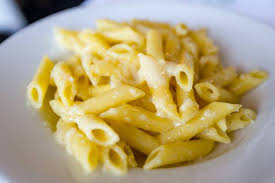

Home
Buttered Noodles

An instant classic that is easy to make.
This recipe is absolutely amaing for a quick, bang for you buck dinner
There are things you can add to expand this recipe and additional steps to take
to elevate it, but the base still tastes amazing.
Ingredients
- Pasta (of your choice)
- Butter
- Salt
- Pepper
- Olive oil
- Additonal seasonings to taste
Steps
- Cook pasta 2-3 minutes al dente from package description
- Add Butter and all seasonings to pot and mix
Optional Steps
- Brown butter first before adding
- Cook pasta under and combine in additional pan with butter
- Add cheese afterward for variety
- Make garlic bread or have any bread on the side (see dough in
Pizza recipe)